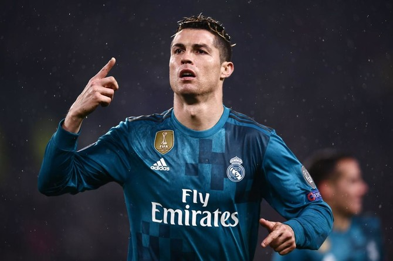

REAL MADRID
Real Madrid is one of the most successful football clubs in the world, having won a record 15 UEFA Champions League titles
Founded in 1902 as Madrid Football Club, the team has traditionally worn a white home kit since inception. The word Real is Spanish for Royal
Real Madrid has won more Spanish top-division (La Liga) championships (36) than any other Spanish side. The club has also won the Copa del Rey, the main Spanish cup competition, 20 times and the Supercopa de España (Spanish Super Cup) 13 times. It won UEFA Cup twice, in 1985 and 1986.

THE BEST REAL MADRID PLAYERS
Cristiano Ronaldo
Cristiano Ronaldo is widely considered Real Madrid's best player ever due to his unparalleled goal-scoring
, having netted a record 450 goals in 438 appearances, averaging over one goal per game during his nine seasons (2009–2018). He was the key catalyst in winning 4 Champions League titles, including three consecutive ones, while securing 4 of his 5 Ballon d'Or awards in Madrid.
